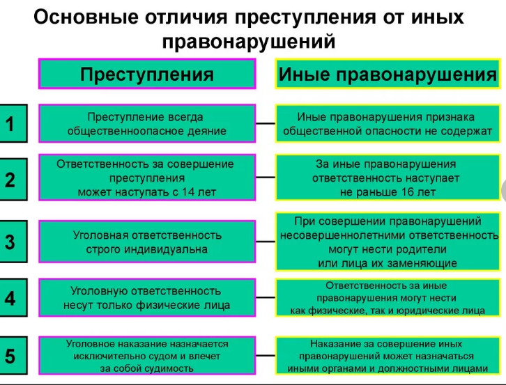

В 1999 году в ходе беспрецедентного расследования, проведённого Институтом мировой литературы им. А.М. Горького при содействии МВД и лично энтузиастов-исследователей творчества Шолохова, была обнаружена оригинальная рукопись первых двух книг романа — тех самых, которые вызывали больше всего нареканий по части авторства (версия про белого офицера). Это была та самая рукопись, написанная в основном рукой Шолохова (а частично его жены), которую автор предоставлял комиссии Серафимовича для проверки в ходе первого скандала о плагиате.